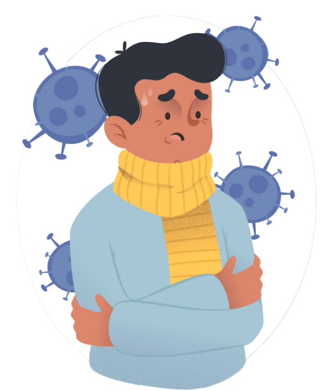

MENUJU KEBIASAAN BARU
YANG LEBIH SEHAT
#AYOHIDUPSEHAT


CORONAVIRUS

Suatu kelompok virus yang dapat menyebabkan penyakit pada hewan atau manusia. Beberapa jenis coronavirus diketahui menyebabkan infeksi saluran nafas pada manusia mulai dari batuk pilek hingga yang lebih serius seperti Middle East Respiratory Syndrome (MERS) dan Severe Acute Respiratory Syndrome (SARS). Coronavirus jenis baru yang ditemukan menyebabkan penyakit COVID-19.

GEJALA UMUM COVID-19
Orang yang terinfeksi memiliki gejala seperti demam, batuk, dan kesulitan bernafas. Gejala dapat berkembang menjadi pneumonia berat.